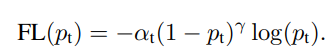
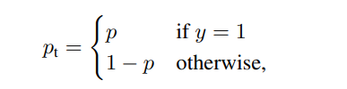
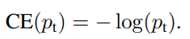
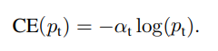

What is Focal Loss and when should you use it?
Better language models and their implications
In this blogpost, we will understand what Focal Loss and when is it used. We will also take a dive into its math and implement step-by-step in PyTorch.
In this blogpost we will understand what Focal Loss and when is it used. We will also take a dive into the math and implement it in PyTorch.
- TOC {:toc}
1 Where was Focal Loss introduced and what was it used for?
Before understanding what Focal Loss is and all the details about it, let’s first quickly get an intuitive understanding of what Focal Loss actually does. Focal loss was implemented in Focal Loss for Dense Object Detection paper by He et al.
For years before this paper, Object Detection was actually considered a very difficult problem to solve and it was especially considered very hard to detect small size objects inside images. See example below where the model doesn’t predict anything for the motorbike which is of relatively smaller size compared to other images.

The reason why in the image above, the bike is not predicted by the model is because this model was trained using Binary Cross Entropy loss which really asks the model to be confident about what is predicting. Whereasm, what Focal Loss does is that it makes it easier for the model to predict things without being 80-100% sure that this object is “something”. In simple words, giving the model a bit more freedom to take some risk when making predictions. This is particularly important when dealing with highly imbalanced datasets because in some cases (such as cancer detection), we really need to model to take a risk and predict something even if the prediction turns out to be a False Positive.
Therefore, Focal Loss is particularly useful in cases where there is a class imbalance. Another example, is in the case of Object Detection when most pixels are usually background and only very few pixels inside an image sometimes have the object of interest.
OK - so focal loss was introduced in 2017, and is pretty helpful in dealing with class imbalance - great!
By the way, here are the predictions of the same model when trained with Focal Loss.

This might be a good time to actually analyse the two and observe the differences. This will help get an intuitive understanding about Focal Loss.
2 So, why did that work? What did Focal Loss do to make it work?
So now that we have seen an example of what Focal Loss can do, let’s try and understand why that worked. The most important bit to understand about Focal Loss is the graph below:

In the graph above, the “blue” line represents the Cross Entropy Loss. The X-axis or ‘probability of ground truth class’ (let’s call it pt for simplicity) is the probability that the model predicts for the ground truth object. As an example, let’s say the model predicts that something is a bike with probability 0.6 and it actually is a bike. The in this case pt is 0.6. Also, consider the same example but this time the object is not a bike. Then pt is 0.4 because ground truth here is 0 and probability that the object is not a bike is 0.4 (1-0.6).
The Y-axis is simply the loss value given pt.
As can be seen from the image, when the model predicts the ground truth with a probability of 0.6, the Cross Entropy Loss is still somewhere around 0.5. Therefore, to reduce the loss, our model would have to predict the ground truth label with a much higher probability. In other words, Cross Entropy Loss asks the model to be very confident about the ground truth prediction.
This in turn can actually impact the performance negatively:
The Deep Learning model can actually become overconfident and therefore, the model wouldn’t generalize well.
This problem of overconfidence is also highlighted in this excellent paper Beyond temperature scaling: Obtaining well-calibrated multiclass probabilities with Dirichlet calibration. Also, Label Smoothing which was introduced as part of Rethinking the Inception Architecture for Computer Vision is another way to deal with the problem.
Focal Loss is different from the above mentioned solutions. As can be seen from the graph Compare FL with CE, using Focal Loss with γ>1 reduces the loss for “well-classified examples” or examples when the model predicts the right thing with probability > 0.5 whereas, it increases loss for “hard-to-classify examples” when the model predicts with probability < 0.5. Therefore, it turns the models attention towards the rare class in case of class imbalance.
The Focal Loss is mathematically defined as:

Scary? It’s rather quite intuitive - read on :)
3 Alpha and Gamma?
So, what the hell are these alpha and gamma in Focal Loss? Also, we will now represent alpha as α and gamma as γ.
Here is my understanding from fig-3: > γ controls the shape of the curve. The higher the value of γ, the lower the loss for well-classified examples, so we could turn the attention of the model more towards ’hard-to-classify examples. Having higher γ extends the range in which an example receives low loss.
Also, when γ=0, this equation is equivalent to Cross Entropy Loss. How? Well, for the mathematically inclined, Cross Entropy Loss is defined as:

After some refactoring and defining pt as below:

Putting eq-3 in eq-2, our Cross Entropy Loss therefore, becomes:

Therefore, at γ=0, eq-1 becomes equivalent to eq-4 that is Focal Loss becomes equivalent to Cross Entropy Loss. Here is an excellent blogpost that explains Cross Entropy Loss.
Ok, great! So now we know what γ does, but, what does α do?
Another way, apart from Focal Loss, to deal with class imbalance is to introduce weights. Give high weights to the rare class and small weights to the dominating or common class. These weights are referred to as α.

Adding these weights does help with class imbalance however, the focal loss paper reports: > The large class imbalance encountered during training of dense detectors overwhelms the cross entropy loss. Easily classified negatives comprise the majority of the loss and dominate the gradient. While α balances the importance of positive/negative examples, it does not differentiate between easy/hard examples.
What the authors are trying to explain is this: > Even when we add α, while it does add different weights to different classes, thereby balancing the importance of positive/negative examples - just doing this in most cases is not enough. What we also want to do is to reduce the loss of easily-classified examples because otherwise these easily-classified examples would dominate our training.
So, how does Focal Loss deal with this? It adds a multiplicative factor to Cross Entropy loss and this multiplicative factor is (1 − pt)**γ where pt as you remember is the probability of the ground truth label.
From the paper for Focal Loss: > We propose to add a modulating factor (1 − pt)**γ to the cross entropy loss, with tunable focusing parameter γ ≥ 0.
Really? Is that all that the authors have done? That is to add (1 − pt)**γ to Cross Entropy Loss? Yes!! Remember eq-4?
4 How to implement this in code?
While TensorFlow provides this loss function here, this is not inherently supported by PyTorch so we have to write a custom loss function.
Here is the implementation of Focal Loss in PyTorch:
class WeightedFocalLoss(nn.Module):
"Non weighted version of Focal Loss"
def __init__(self, alpha=.25, gamma=2):
super(WeightedFocalLoss, self).__init__()
self.alpha = torch.tensor([alpha, 1-alpha]).cuda()
self.gamma = gamma
def forward(self, inputs, targets):
BCE_loss = F.binary_cross_entropy_with_logits(inputs, targets, reduction='none')
targets = targets.type(torch.long)
at = self.alpha.gather(0, targets.data.view(-1))
pt = torch.exp(-BCE_loss)
F_loss = at*(1-pt)**self.gamma * BCE_loss
return F_loss.mean()If you’ve understood the meaning of alpha and gamma then this implementation should also make sense. Because, similar to the paper it is simply adding a factor of at*(1-pt)**self.gamma to the BCE_loss or Binary Cross Entropy Loss.
5 Credits
Please feel free to let me know via twitter if you did end up trying Focal Loss after reading this and whether you did see an improvement in your results! Thanks for reading!
- The implementation of Focal Loss has been adapted from here.
fig-1andfig-2are from the Fastai 2018 course Lecture-09!